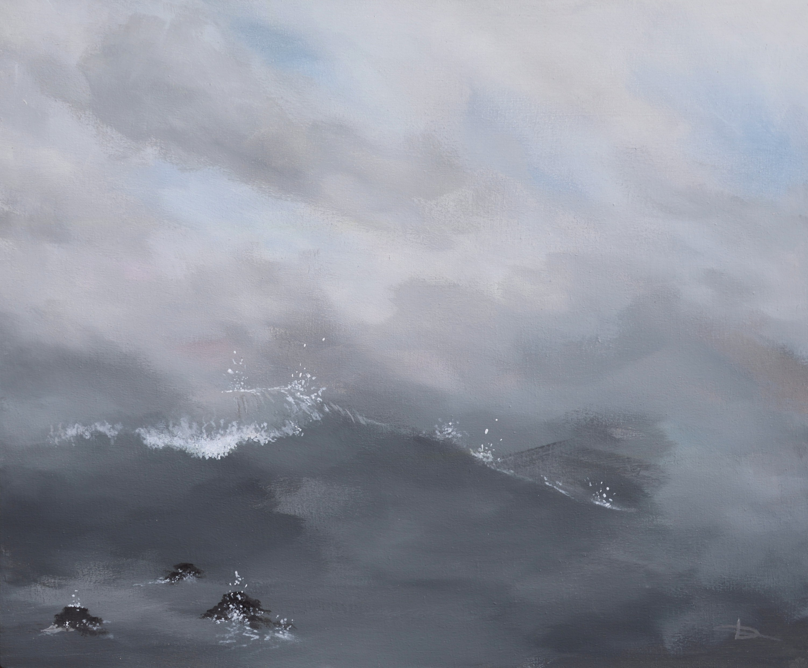
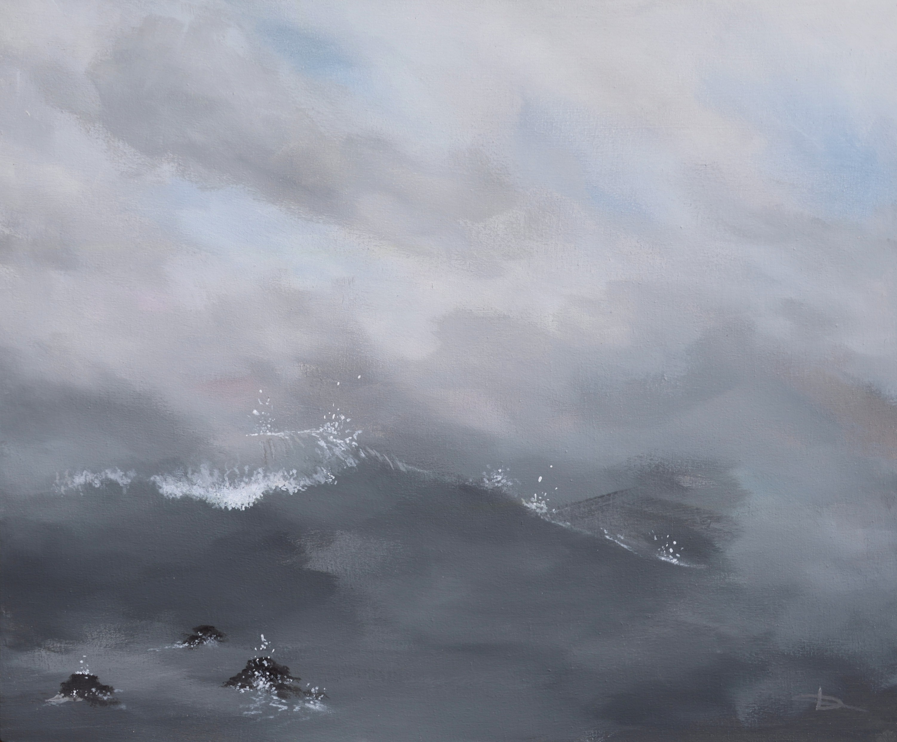

Bienvenue dans
Evzone
Le site de Francis de Faccio
Artiste peintre et photographe, il traduit nos liens profonds avec la nature à travers ses œuvres uniques.
Peindre et photographier, c'est capturer l'âme d'un paysage, saisir ses émotions, ses mouvements et la puissance des éléments.
Chaque tableau reflète ce dialogue intime entre l'homme et la nature, invitant à un voyage sensoriel entre évasion et introspection.
Sa démarche repose sur une exploration où les couleurs primaires servent de point de départ à chaque composition.
Il s'engage dans une approche écologique en fabriquant ses cadres à partir de matériaux recyclés et en transformant des tissus de récupération pour créer ses supports de toiles.
Cette fusion de créativité, d'originalité et de respect de l'environnement donne naissance à des œuvres uniques et durables.
 
